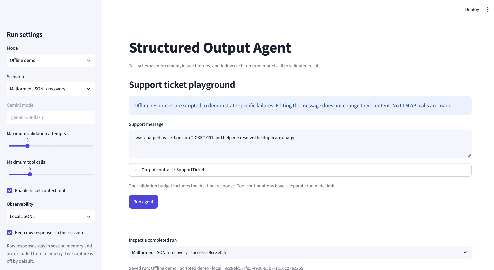
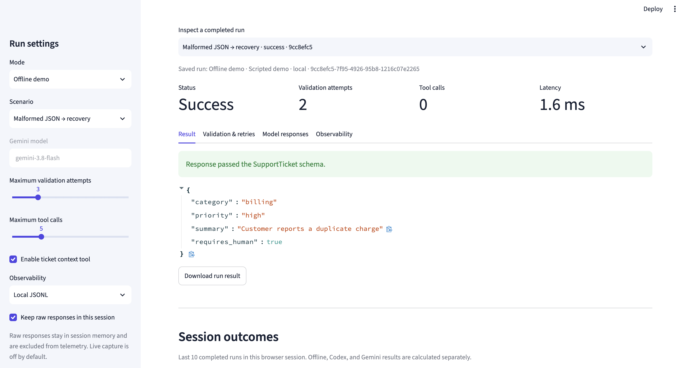

{ }


INDEPENDENT PORTFOLIO · 2026
I’m Shreyansh Jain — an engineer, curious maker, and fan of clear, useful digital experiences.
SELECTED WORK
A selection of projects, experiments, and ideas.
The playground runs locally with the project setup.


A LITTLE ABOUT ME
I’m Shreyansh Jain. I like exploring how technology can make everyday work simpler, clearer, and more human.
This portfolio is a work in progress. I’m adding project stories, visuals, and the details of my experience. In the meantime, you can find me on GitHub and LinkedIn.
See what I’m building ↗HAVE A GOOD ONE IN MIND?
Open to interesting ideas, collaborations, and conversations.